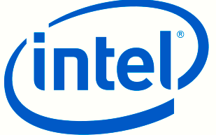

홈 > 브랜드 매거진 > 인텔
인텔
인텔은 보이지 않는 부품을 소비자가 인식하는 브랜드로 만든 대표적 사례다. 컴퓨터 내부의 기술을 밖으로 끌어내어 신뢰와 성능의 이름으로 각인시킨 점이 인텔 브랜딩의 핵심이다.
산업 분야 기술·전자 · 공개 등급 편집 검수 · 브랜드 평가 4.7 ★

한눈에 보는 브랜드
인텔은 보이지 않는 부품을 소비자가 인식하는 브랜드로 만든 대표적 사례다. 컴퓨터 내부의 기술을 밖으로 끌어내어 신뢰와 성능의 이름으로 각인시킨 점이 인텔 브랜딩의 핵심이다.
브랜드 관점
인텔은 보이지 않는 부품을 소비자가 인식하는 브랜드로 만든 대표적 사례다. 컴퓨터 내부의 기술을 밖으로 끌어내어 신뢰와 성능의 이름으로 각인시킨 점이 인텔 브랜딩의 핵심이다.
시작과 성장
1968년 로버트 노이스와 고든 무어가 설립한 미국의 반도체 제조 기업으로 마이크로프로세서 이외에 컴퓨터 시스템, 소프트웨어, 네트워킹 및 커뮤니케이션 장비 등을 제조 · 판매함.
브랜드 아이덴티티
인텔의 아이덴티티는 브랜드명, 로고 사용 여부, 업종 언어, 국가적 배경을 중심으로 정리됩니다. 대표 로고 자산이 연결되어 있어 시각 식별자를 함께 검토할 수 있습니다.
제품과 서비스
대표 제품과 서비스 정보는 편집 검수 후 공개됩니다.
현재 상태
타임라인
BI/CI 변천사
함께 읽을 브랜드
필립스는 기술을 과시하기보다 생활을 더 단순하고 건강하게 만드는 방향으로 브랜드 의미를 확장해 왔다. 전기·전자 기술은 기반이지만, 소비자가 인식하는 가치는 일상의...
 기술·전자 · 편집 검수Austrian Airlines
기술·전자 · 편집 검수Austrian AirlinesAustrian Airlines는 1969년에 기록된 Airlines 계열의 브랜드 아이덴티티 사례입니다. Josef Oberauer가 아이덴티티 작업의 디자이너로...
BE
BEA
기술·전자 · 편집 검수BEABEA는 1967년에 기록된 Airlines 계열의 브랜드 아이덴티티 사례입니다. FHK Henrion가 아이덴티티 작업의 디자이너로 기록되어 있습니다. 공개 섹션...
 기술·전자 · 편집 검수Canadian National Railway
기술·전자 · 편집 검수Canadian National RailwayCanadian National Railway는 1960년에 기록된 Historical 계열의 브랜드 아이덴티티 사례입니다. Allan Fleming가 아이덴티티 작...
 기술·전자 · 편집 검수Cazoo
기술·전자 · 편집 검수CazooCazoo는 2025년에 기록된 Digital Products & Services 계열의 브랜드 아이덴티티 사례입니다. Fold7Design가 아이덴티티 작업의 디자...
Ce
Center Square
기술·전자 · 편집 검수Center SquareCenter Square는 2023년에 기록된 Technology 계열의 브랜드 아이덴티티 사례입니다. jkr가 아이덴티티 작업의 디자이너로 기록되어 있습니다. 공개...
Cl
Club Pescine
기술·전자 · 편집 검수Club PescineClub Pescine는 2025년에 기록된 Retail 계열의 브랜드 아이덴티티 사례입니다. Caserne가 아이덴티티 작업의 디자이너로 기록되어 있습니다. 공개...
 기술·전자 · 편집 검수Cohere
기술·전자 · 편집 검수CohereCohere는 2023년에 기록된 Technology 계열의 브랜드 아이덴티티 사례입니다. Pentagram가 아이덴티티 작업의 디자이너로 기록되어 있습니다. 공개...